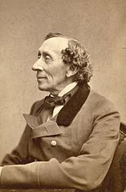

Hans Christian Andersen often referred to in Scandinavia as H. C. Andersen; April 2, 1805 – August 4, 1875) was a Danish author and poet. Although a prolific writer of plays, travelogues, novels, and poems, Andersen is best remembered for his fairy tales. Andersen's popularity is not limited to children; his stories—called eventyr, or "fairy-tales" – express themes that transcend age and nationality.
Early life
Hans Christian Andersen was born in the town of Odense, Denmark, on Tuesday, April 2, 1805. He was an only child. Andersen's father, also Hans, considered himself related to nobility. His paternal grandmother had told his father that their family had in the past belonged to a higher social class, but investigations prove these stories unfounded. Theories that Andersen may have been an illegitimate son of King Christian VII persist. Nevertheless, King Frederick VI took a personal interest in him as a youth and paid for a part of his education.
Andersen's father, who had received an elementary education, introduced Andersen to literature, reading him Arabian Nights. Andersen's mother, Anne Marie Andersdatter, was educated and worked as a lawyer following his father's death in 1816, remarrying in 1818. Andersen was sent to a boarding school for rich children where he received an advanced education and was forced to support himself, working as a banker and, later, for a doctor. At 14, he moved to Copenhagen to seek employment as an actor. Having an excellent soprano voice, he was accepted into the Royal Danish Theatre, but his voice soon changed. A colleague at the theatre told him that he considered Andersen a poet. Taking the suggestion seriously, Andersen began to focus on writing.
Fairy tales and poetry
His initial attempts at writing fairy tales were revisions of stories that he heard as a child. Andersen brought this genre to a new level by writing a vast number of fairy tales that were both bold and original. Initially they were not met with recognition, due partly to the difficulty in translating them and capturing his genius for humor and dark pathos.
It was during 1835 that Andersen published the first installment of his immortal Fairy Tales (Danish: Eventyr; lit. "fantastic tales"). More stories, completing the first volume, were published in 1836 and 1837. The collection consists of nine tales that includes The Tinderbox, The Princess and the Pea, Thumbelina, The Little Mermaid, and The Emperor's New Clothes. The quality of these stories was not immediately recognized, and they sold poorly. At the same time, Andersen enjoyed more success with two novels, O.T. (1836) and Only a Fiddler (1837); the latter was reviewed by the young Søren Kierkegaard.
After a visit to Sweden in 1837, Andersen became inspired by Scandinavism and committed himself to writing a poem that would convey the relatedness of Swedes, Danes, and Norwegians. It was in July 1839 during a visit to the island of Funen that Andersen first wrote the text of his poem, Jeg er en Skandinav (I am a Scandinavian). Andersen composed the poem to capture "the beauty of the Nordic spirit, the way the three sister nations have gradually grown together," as part of a Scandinavian national anthem. Composer Otto Lindblad set the poem to music, and the composition was published in January 1840. Its popularity peaked in 1845, after which it was seldom sung. Andersen spent 2 weeks at the Augustenborg Palace in the autumn of 1844.